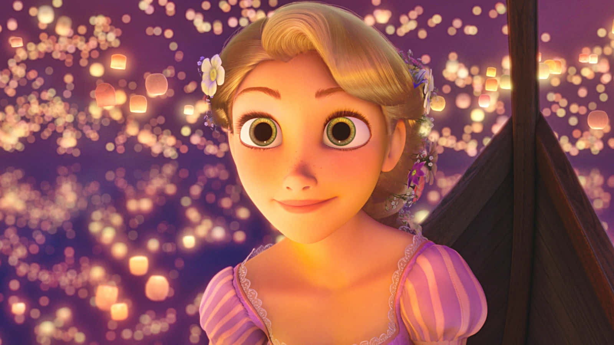

Explore the Disney Princesses
Belle
Quote: "What do you know about my dreams, Gaston?"
Background: Belle is the titular female protagonist of Disney's 1991 animated feature film Beauty and the Beast. She is the only daughter of Maurice, an inventor with whom she resides in a small French village. The townsfolk labeled Belle as an outcast because of her free spirit. She dreams of escaping her “poor provincial town” in France. Belle's passion for fantastical stories, coupled with her outcast status, left her yearning for a life of adventure outside her small village. She is beautiful but is unaware of her own good looks, in which Gaston constantly pursues her. She unexpectedly gets her wish when she falls in love with the Beast after saving her father. Ultimately, when Belle embarks on her unexpected adventure, she winds up trading her own freedom for her father’s, learning from the castle’s residents and the Beast himself, and creating a new life for herself.
Personality: Belle is a very intelligent woman, gaining a significant amount of knowledge over the years through her love for books, providing her with amazing vocabulary and active imagination. She is very confident and outspoken in her opinions, with villagers being charmed by her “beauty and brains”. Belle is known throughout the village for her beauty, though she doesn’t acknowledge this. She is greatly aware that her fellow citizens think of her as “odd” or “peculiar”. Belle pays very little attention to her appearance, unlike the much conceited Gaston, who only wishes to wed her due to outward appearances. Being wise in her decisions, Belle is quite obstinate when it comes to upholding her opinions and who she interacts with.

Rapunzel
Quote: “I spent my whole life in this tower, but I am ready to break free!”
Background: As a baby, Rapunzel was abducted by Mother Gothel and locked away in a remote tower for eighteen years. During her stay in the tower, far away from the city, she grew fascinated with the phenomenon of "floating lights" that would appear only on her birthday. With the help of Flynn Rider, Rapunzel escaped from the tower to learn more about the lights and pursue her dream of exploring the outside world. She eventually realized that she was the lost princess of Corona. She found her long-lost family as she cut her hair off, and decided to live her life anew, upholding the responsibility of the royal family.
Personality: Rapunzel is the creative, spirited Princess of Corona, with a strong sense of curiosity about the world, and a willingness to step outside of her comfort zone. Despite not knowing the world beyond her tower, she finds the courage to push herself forward and discover new friends, find her true family and pursue her dreams. She is very optimistic and open-hearted, symbolizing her key traits of discipline and a strong desire to explore the world.
Cinderella
Quote: "No matter how your heart is grieving, if you keep on believing, the dream that you wish will come true."
Background: Cinderella is a kind and gentle young woman who suffers under the cruelty of her stepmother and stepsisters. Despite her hardships, she remains hopeful and kind-hearted. With magical help from her fairy godmother, she attends the royal ball, meets Prince Charming, and ultimately transforms her life from rags to riches.
Personality: Cinderella is resilient, kind, and patient. She demonstrates humility and grace in adversity, inspiring those around her with her optimism and unwavering belief in dreams.

Aurora
Quote: "I know you, I walked with you once upon a dream."
Background: Aurora, also known as Sleeping Beauty, was cursed by Maleficent to fall into a deep sleep on her sixteenth birthday. Rescued by Prince Phillip, she awakens to fulfill her destiny as a princess. Her story is one of love, hope, and triumph over evil.
Personality: Aurora is gentle, elegant, and poised. She embodies grace, kindness, and the romantic ideal of believing in love and dreams.

Tiana
Quote: "I remember Daddy told me: fairytales can come true. But you gotta make them happen, it all depends on you!"
Background: Inspired by the princess from the novel "The Frog Princess" by E.D Baker, which in turn was inspired by "The Frog Prince" by the Brothers Grimm, Tiana is the heroine of the 2009 animated film The Princess and the Frog and is the first African-American princess. Her dream is to open a restaurant through hard work and resilience. By kissing Prince Naveen in frog form, she is turned into a frog because she kissed him for material gain, not love. Eventually, she falls for the handsome prince, marries him, becomes a real princess, and opens her own restaurant.
Personality: Tiana’s story is a testament to the power of dreams and perseverance in the face of adversity. She is strong-willed, disciplined, independent, and serves as a role model to young girls everywhere.